Game Map
Details
Subjects


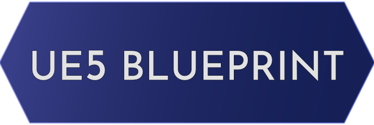
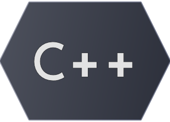
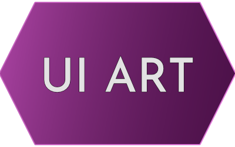
Features
- Overview
- Map Classes
- Setup
- Zooming & Panning
- Map Icons
- Waypoint
(Click any of the list items to view their related content)
(click any image to enlarge)
Overview
- Accurate representation of the world and the distance between points of interest
- POI icons on map with easily edited information
- Zooming and Panning
- Navigable with Mouse and Gamepad
- Tracks player location and rotation
- Placeable waypoint on the map that also adds a waypoint mesh in the world
- Able to hover POI to view information about them
Overview
- Accurate representation of the world and the distance between points of interest
- POI icons on map with easily edited information
- Zooming and Panning
- Navigable with Mouse and Gamepad
- Tracks player location and rotation
- Placeable waypoint on the map that also adds a waypoint mesh in the world
- Able to hover POI to view information about them
Map Classes
- AMapCommunicator (AActor)
- BP_MapPOI (AActor)
- UMapIcon (UUserWidget)
- UZoomableWidget (UUserWidget)
- UMapBase (Child of UZoomableWidget)
AMapCommunicator
MapCommunicator is an actor placed in the world and serves as the maps anchor. It has an actor variable for WorldBase which I use to reference the landscape. With the landscape ref I place the communicator perfectly centered (more info in the under Setup)
BP_MapPOI
BP_MapPOI are placed wherever you want a Point of Interest marker on the map. It has some exposed variables that are shown on the map.
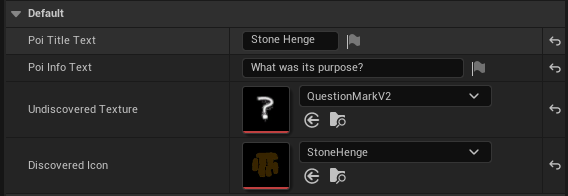
UMapIcon
The MapIcon has functionality tied to hover and has delegates that return the icons information that is assigned on the BP_MapPOI.
UZoomableWidget
The Zoomable widget has functionality for Zooming and Panning. Since this would normally be functionality that can be used for more things than just a map I added it to a separate class. It has some variables to adjust zooming and panning.
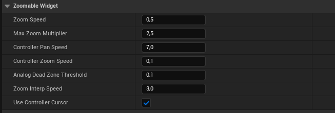
UMapBase
MapBase has functionality to translate between WorldPosition and MapPosition and add POI icons to the map. It can also retrieve an icon based on ID so that it can be altered. It has some exposed variables.
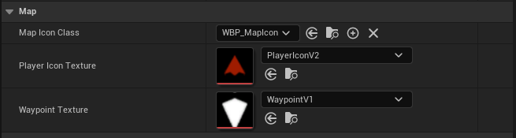
Setup
The size and location of the map communicator is set in the construction script. I'm referencing the landscape to get the exact center point and size of the world i want to project.
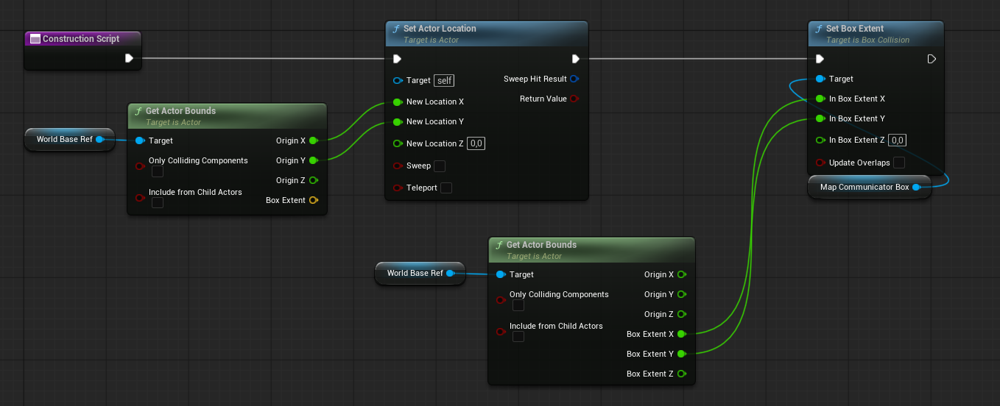
To get an exact image overview of the world I place a camera on the BP_MapCommunicator.
Set its aspect ratio to be the same as the landscapes dimensions,
in my case that's 16x11, meaning the camera aspect ratio is 16/11 ≈
1.4545
With aspect ratio correct I move the camera upwards until it fits
the world in its view just barely. With the camera in place I pilot it
and use the in-engine high resolution screenshot tool.
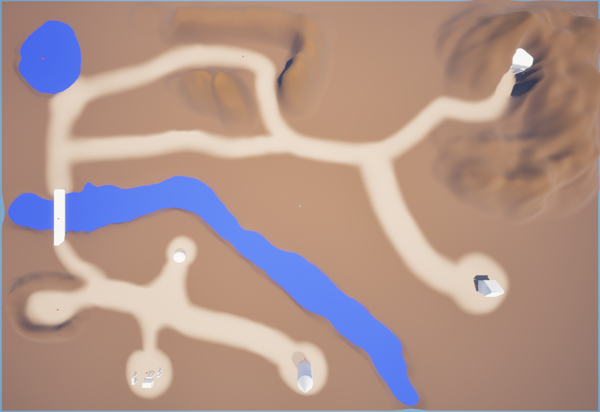
With this I have an image that's a near perfect representation of the world from above. from here you can simply use the image you have as the map background, or you can use this as a basis for drawing the map in some other software. I used Krita to make a simple map texture.
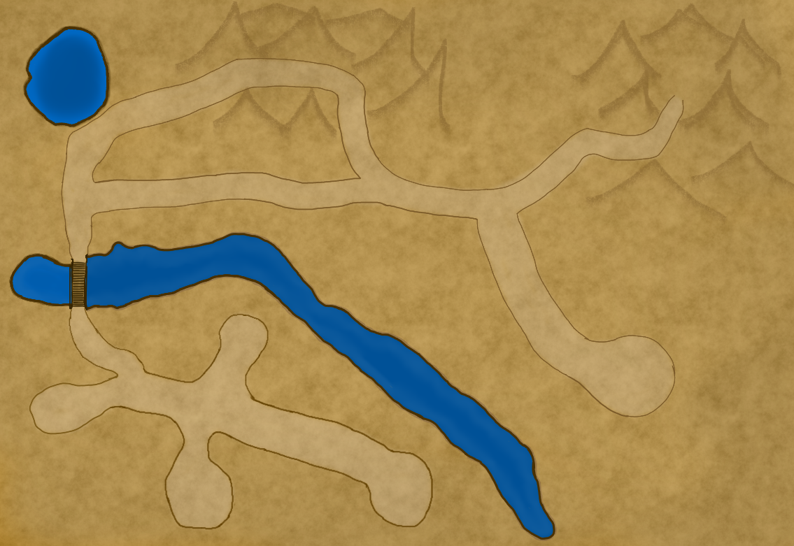
From here I can start adding BP_MapPOIs to the world!
Zooming and Panning
Mouse
Zooming is done by detecting mouse wheel through
NativeOnMouseWheel. The zoom is done by scaling
an image nested in a horizontal and vertical scrollbox. Max zoom I used was 2.5x meaning
the zoom goes from 1 to 2.5x. It has clamps to keep the map from overflowing sideways and
smoothing when updating the image scale.
Panning is done via NativeOnMouseButtonDown
where the widget location is saved, then NativeOnMouseMove
is used to add offset from that point. The same logic is used here to keep the map from overflowing.
Gamepad
Both Zooming and Panning with gamepad is done via NativeOnAnalogValueChanged. Zooming is done with the Right Thumbstick Y-Axis and Panning is done by moving the gamepad cursor with Left Thumbstick near the edges of the map when zoomed in.
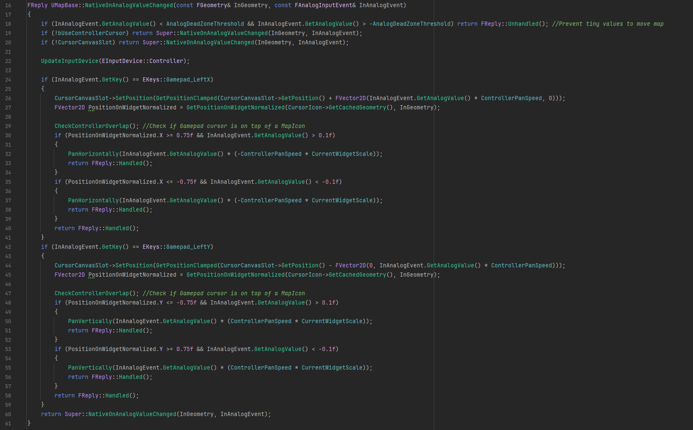
Map Icons
The information about each POI (Point of Interest) is set via exposed variables in the BP_MapPOI. Each Icon is also automatically assigned its own ID that is used to make updates to it, like if it has been discovered.
OnBeginPlay the BP_MapCommunicator detects any of the BP_MapPOI actors placed in the world and adds an icon to the map using the world center point, offset from it and the world scale compared to the map. Each MapIcon is its own child widget that is forwarded the information assigned by the player, which is displayed on hover.
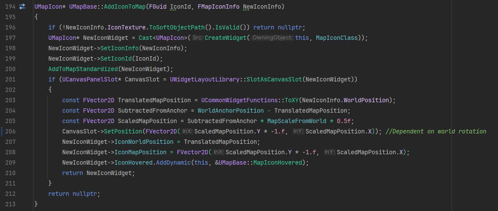
BP_MapPOI also has an attached box collision which reacts to the player and will set the POI as discovered. Upon being discovered the map icon image will change to the discovered texture.
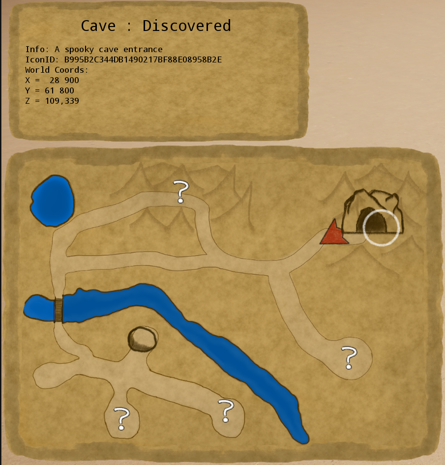
Waypoint
A waypoint mesh exists in the BP_MapCommunicator and is moved and made visible when a map waypoint is placed on the widget. World position is found by adjusting the Vector2D to match the world rotation, then scaling the offset and subtracting it to the anchor point
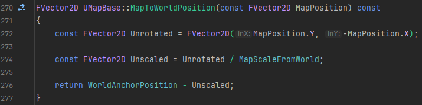
Below you can see:
- Map with waypoint.
- Top-down image of the world with the waypoint mesh visible.
- Image where they are stacked on each other but the top-down image of the world has slight opacity so that both can be seen near perfectly synced.
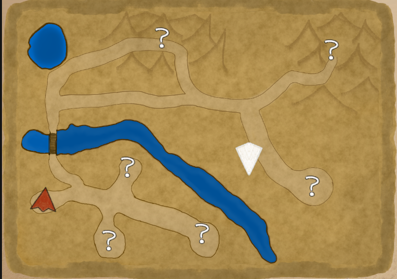
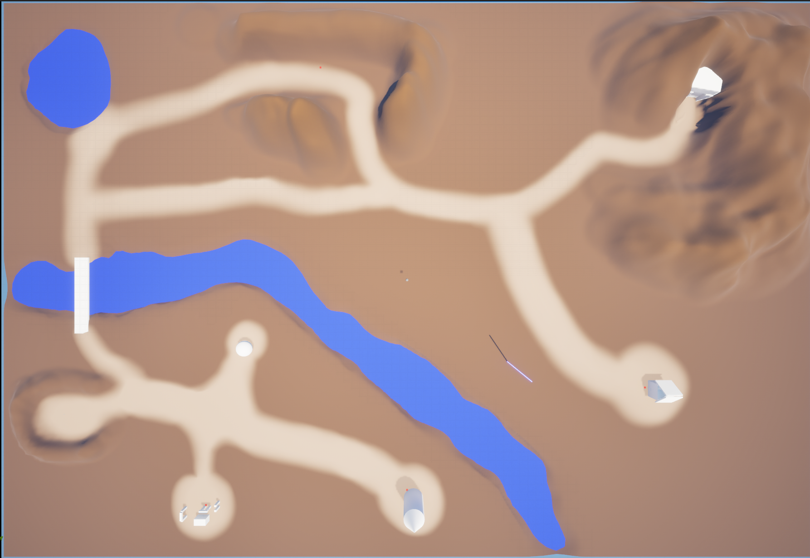
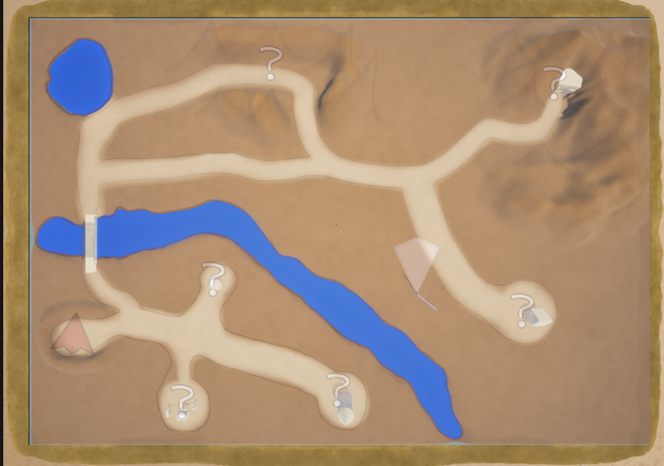
Inputs for changing the waypoint is Middle Mouse Button through NativeOnMouseButtonDown and Gamepad Face Button Left via NativeOnKeyDown.
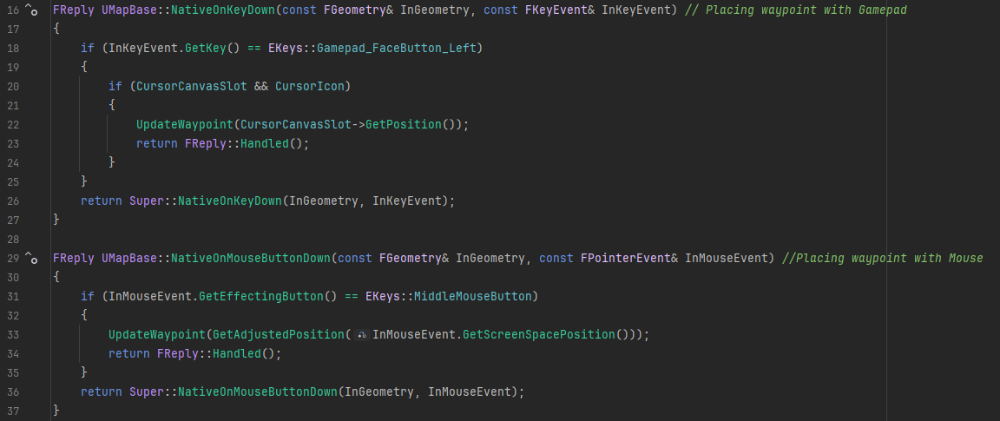
The function to update the waypoint will create it if needed, otherwise just set the icon/mesh to the updated positions.
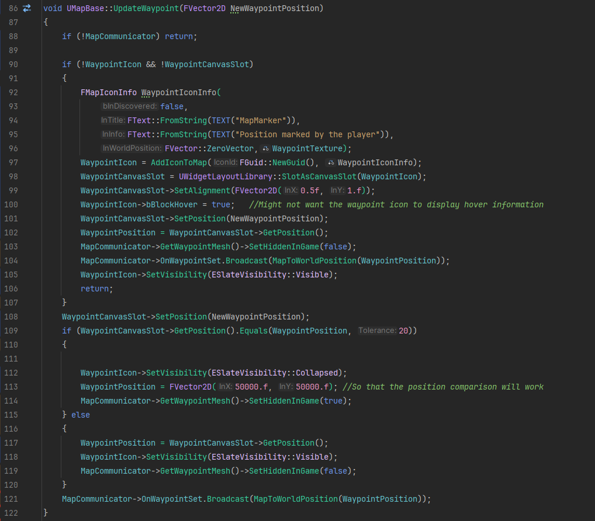